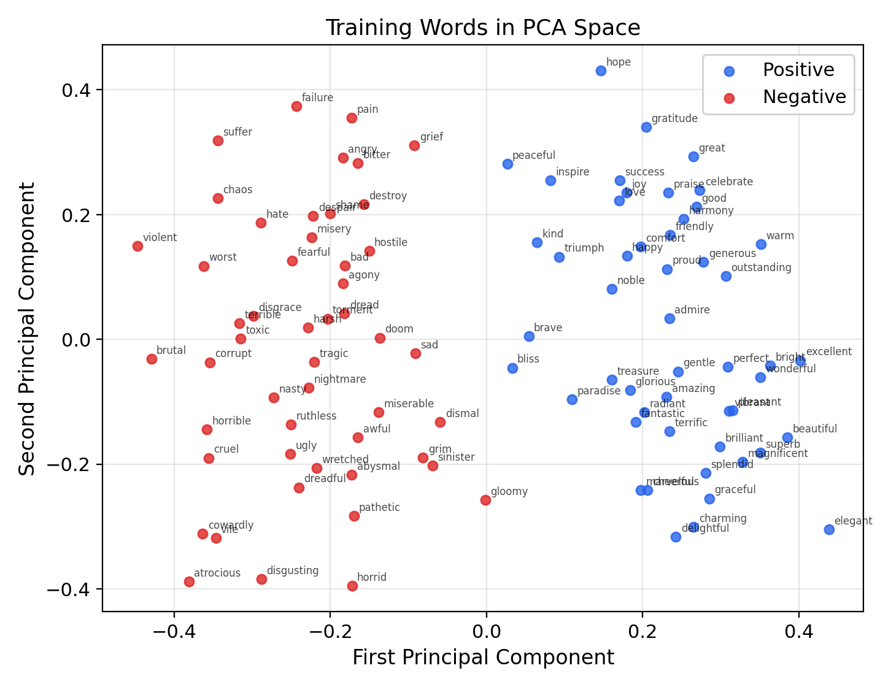
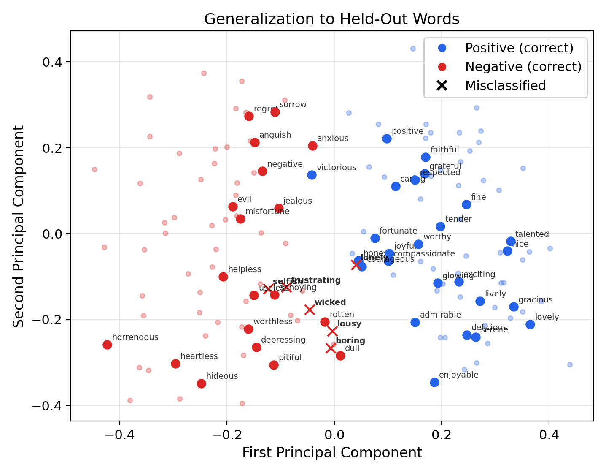
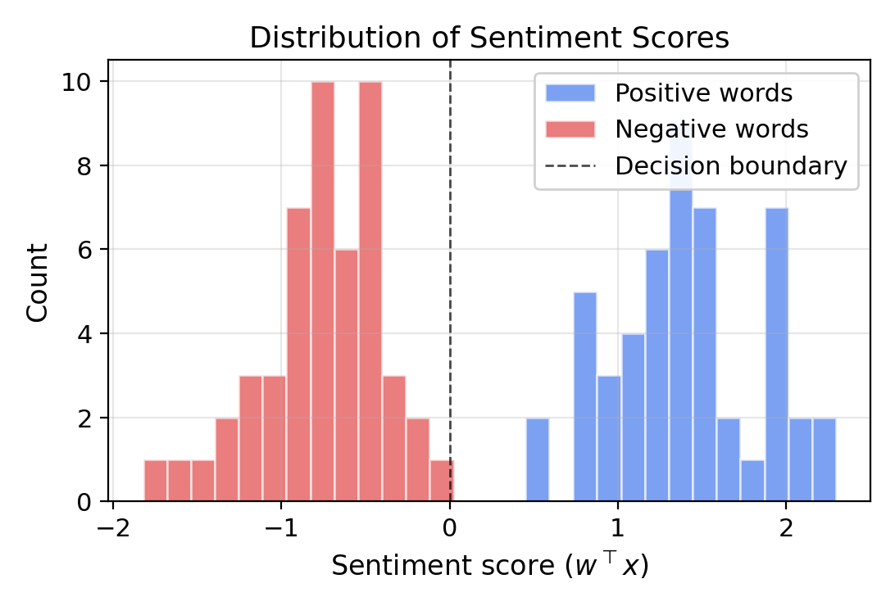
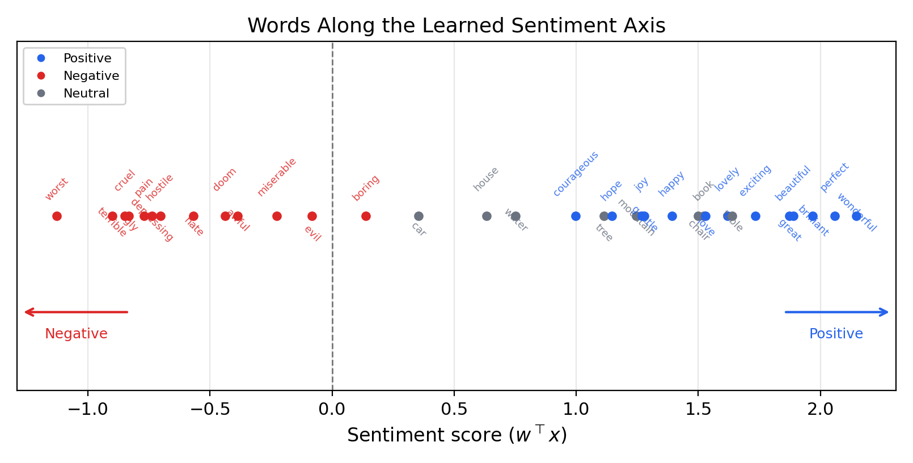

Perceptron Sentiment Classification with GloVe Embeddings
Outline
- The task
- The data
- The perceptron algorithm
- Training and convergence
- Visualizing the decision boundary
- Generalization
- The geometry of sentiment
- Limitations
Part I: The Task
Sentiment as Binary Classification
- Given a pre-trained word embedding $x \in \R^{50}$ (GloVe 6B 50d)
- And a sentiment label $t \in \{-1, +1\}$
- Find $w$ such that $\sgn(w^\top x) = t$
The perceptron convergence theorem guarantees: if the data is linearly separable, the algorithm converges in at most $1/\alpha^2$ updates
Why Is This Interesting?
- GloVe vectors are trained on co-occurrence statistics, not sentiment labels
- There is no a priori reason sentiment should be linearly separable
- If a linear classifier succeeds, sentiment polarity is linearly encoded in embedding space
- A nontrivial empirical finding about the structure of natural language
Part II: The Data
GloVe Embeddings
- GloVe 6B 50d: 400,000 word vectors
- Trained on 6 billion tokens from Wikipedia and Gigaword
- Embedding dimension $d = 50$
- Each word represented by a vector $x_w \in \R^{50}$
Word Lists
- Training set: 100 words (50 positive, 50 negative)
- Test set: 50 words (25 positive, 25 negative)
- Words chosen to be unambiguously positive or negative in isolation
- Positive: "good," "love," "beautiful," "wonderful," ...
- Negative: "bad," "hate," "ugly," "terrible," ...
Normalization and Bias Trick
Normalize so $\|x^{(i)}\| \leq 1$:
$$x^{(i)} \leftarrow \frac{x^{(i)}}{\max_j \|x^{(j)}\|}$$
Append a constant $1$ to absorb the threshold as a learnable bias:
$$x^{(i)} \leftarrow \begin{pmatrix} x^{(i)} \\ 1 \end{pmatrix} \in \R^{51}$$
Part III: The Perceptron Algorithm
Implementation
Initialize $w = 0$, iterate over training examples, update $w \leftarrow w + tx$ on each mistake
def perceptron_train(X, y, max_epochs=1000):
w = np.zeros(X.shape[1])
for epoch in range(max_epochs):
mistakes = 0
for i in range(len(X)):
if y[i] * (w @ X[i]) <= 0:
w = w + y[i] * X[i]
mistakes += 1
if mistakes == 0:
break
return w
Part IV: Training and Convergence
Convergence Plot

Convergence Results
- Converges after 12 epochs, making 22 total weight updates
- Mistake counts per epoch: $3, 2, 2, 2, 2, 2, 2, 2, 2, 2, 1, 0$
- Pattern of repeated 2-mistake epochs: a few "difficult" words near the boundary keep getting corrected
Verifying the Theorem
- Computed margin: $\alpha \approx 0.011$
- Theoretical bound: $T \leq 1/\alpha^2 \approx 7{,}897$ updates
- Actual updates: 22
- The worst-case guarantee is conservative, as is typical
The Key Insight
The data is linearly separable
100 words in $\R^{50}$, with 50 positive and 50 negative labels, can be perfectly separated by a hyperplane
GloVe was never trained on sentiment — yet the perceptron finds a separating hyperplane
Part V: Visualizing the Decision Boundary
PCA Projection of Training Data

Projected Decision Boundary

Part VI: Generalization
Test Performance
- Evaluate on 50 held-out words (25 positive, 25 negative)
- 88% test accuracy (44/50 correct)
- The perceptron has discovered genuine geometric structure, not memorized training data
Error Analysis
Six misclassified words: wicked, lousy, boring, frustrating, selfish, lonely
- "Wicked" has a positive slang sense ("wicked good") pulling its embedding toward positive contexts
- "Boring" and "lonely" are mildly negative but overlap with neutral descriptive language
- Errors highlight where distributional similarity diverges from sentiment
Generalization Visualization

Part VII: The Geometry of Sentiment
The Sentiment Direction
- The learned $w \in \R^{51}$ (excluding bias) defines a direction in embedding space
- Inner product $w^\top x$ = scalar sentiment score
- High positive score $\Rightarrow$ positive sentiment
- High negative score $\Rightarrow$ negative sentiment
- Magnitude $|w^\top x|$ reflects confidence
Score Distribution

The Sentiment Spectrum

Observations from the Spectrum
- Strong sentiment words at the extremes: "hate," "awful" $\leftrightarrow$ "love," "wonderful"
- Neutral words (table, chair, water) score mildly positive — the Pollyanna effect
- Positive language is more frequent than negative in natural text
- The relative ordering within each polarity matches human intuition
Connection to Linear Probes
- A linear probe tests whether a representation encodes a property by training a linear classifier on frozen representations
- Standard tool for analyzing representations in modern NLP
- The perceptron sentiment classifier is the simplest possible linear probe
- Even this minimal setup discovers sentiment structure — evidence of how strongly sentiment is encoded in distributional vectors
Part VIII: Limitations
Where This Approach Fails
- Context dependence: "cold" is negative in "cold reception," neutral in "cold water" — word-level embeddings collapse distinct senses
- Compositionality: "not bad" is positive; "terribly exciting" is positive despite negative adverb — requires understanding syntax
- Nonlinear structure: some semantic properties are not linearly encoded
- Vocabulary coverage: GloVe lacks embeddings for misspellings, slang, rare words
Summary
- GloVe embeddings encode sentiment as a linearly separable property in $\R^{50}$
- The perceptron converges in 22 updates, confirming the convergence theorem empirically
- The learned $w$ defines a sentiment direction; $w^\top x$ scores words on a continuous axis
- 88% test accuracy on held-out words — the classifier generalizes
- Neutral words score mildly positive (Pollyanna effect)
- The margin $\alpha \approx 0.011$ satisfies the bound $T \leq 1/\alpha^2$
- This is a linear probe — the standard technique for analyzing learned representations
- Limitations: context dependence, compositionality, nonlinearity, vocabulary gaps